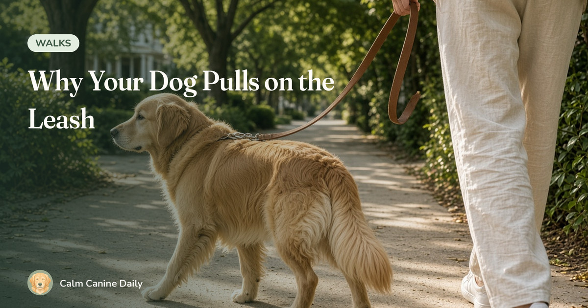

Calm Canine Daily is a small US site for everyday dog owners who want clearer hellos at the door, quieter windows, easier walks, and a dog who can actually settle when the day is done.
We teach short, reward-based habits you can practice at home. This is educational guidance, not a diagnosis, a veterinary plan, or a promise of a specific result.
Guides that match real households

Brain Games for Dogs at Home: 10 Indoor Games With No Fancy Toys
10 indoor brain games for dogs you can play at home with no fancy toys. Short sessions, then rest. Free 7-day checklist included.

How to Stop Your Dog From Barking at the Window
Learn how to stop dog barking at the window: manage the view, teach a check-in, and practice on easy days. Free 7-day checklist included.

Why Your Dog Pulls on the Leash (and How to Teach Loose-Leash Walking)
How to stop a dog pulling on the leash without yanking back. Pay for slack, change direction, and practice in easy places first.

How to Stop Your Dog From Jumping on Guests
How to stop a dog jumping on guests without kneeing or yelling: wait for four paws, coach your visitors, and practice before the doorbell rings.

Why a Tired Dog Still Won’t Settle (and What to Do Instead)
Why a tired dog won't settle after a long walk, and what to do instead: teach a short mat settle, give the brain a job, then offer rest.
Want a longer, structured option?
Some owners who like the free week later look at Brain Training for Dogs, an online, reward-based program of short mental games and lessons. We mention it as independent affiliates. We are not the course creator, and we cannot promise a result. Read the honest review first, and confirm current terms on the checkout page.
Read the Brain Training for Dogs review See Brain Training for Dogs
Disclosure: Some links are affiliate links. If you purchase through one, we may earn a commission at no extra cost to you. Educational content only.
How we teach
Positive reinforcement, management, and a replacement behavior - not prong collars, shock, or "alpha" talk. If a situation feels unsafe or you are worried about a bite risk, pause and get qualified in-person help.